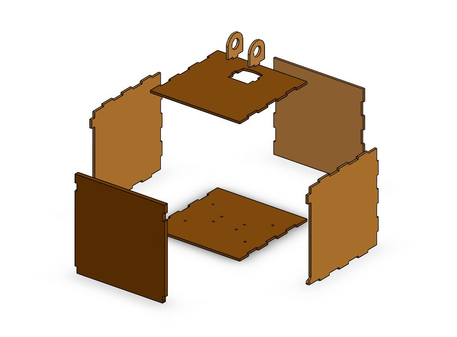

Mechanical
Overview


Our assembly consists of three different subsystems: the “head”, the “body”, and the “drivetrain”. You will find that a lot of our design was either taken directly from or closely inspired by this existing Wall-E replica, like the head assembly and the arms. The main materials used for the final assembly are: PLA, MDF, plywood, aluminum, COTS treads, and various fasteners and adhesives. The main manufacturing methods were 3D printing, laser-cutting and water jetting. Below, you’ll see a more detailed description of each subassembly.
Subassembly 1: Head (Eyes & Neck)

Most of the head assembly was un-modified from the original that we found. This was due to the convenience of the original size. We also didn’t find a need to modify the locations of the servos since they provided the movement we wanted. All of these parts were 3D printed with PLA, and assembled with a press-fit.

The only thing we added in addition to the original design was a metal spacer (see picture) on the paperclips connecting each eye servo to the center shaft. This was due to the fact that each time we tested eye movement, the original paper clips would bend in the middle from movement, which would result in less range. The metal spacer added support to prevent that from happening again.

Subassembly 2: Body (Arms, Electronics & Box)


Within this subassembly, there are 3 categories of parts: the arms, the body, and the electronics & electronic mounts housed inside the body.
For the arms, only one part needed to be modified from the original design, which was the inner part of the arm hinge that connects the arm from the outside of the box to the servo housed inside the box. Since we used the original scale arms but switched to standard-size servos instead of sub-micro size, we needed to scale up the portion of the hinge that attaches to the servo horn by 1.72. In addition, we shortened the height of the hinge piece since the thickness of the walls of our box are thinner than the original design, and we wanted the arms to stay flush with the outside of the body.
After the necessary modifications, all of our arm components were 3D printed using PLA and assembled with press-fit and super glue where needed.


The body design comprised of 5 rectangular panels with interlocking notches for stability laser cut out of ⅛” MDF for the sides, bottom, top, and back wall of the box and assembled with wood glue, as well as a door panel laser cut from ¼” plywood and attached via two small metal pins that allow it to rotate open and close. A thicker and sturdier material (plywood) was chosen for the door to ensure the longevity of the hinges.
To secure the electronics inside the box, we designed and 3D printed mounts out of PLA with dimensions customized to each electronic. For components with bolt holes, they were secured with bolts and nuts to their mounts, while electronics without bolt holes had mounts that were press-fit. All of the mounts were then secured to the inside of the box using strips of velcro to make them easily removable.
The biggest challenge was arranging the electronics within the body so that components that needed to be wired together were placed in appropriate proximity to each other. In addition, electronics that had ports that we needed to connect to for testing purposes needed to be close to the door and facing outward for ease of access.
Subassembly 3: Drivetrain

The drivetrain was heavily inspired by the original, but almost all of the parts were re-designed to fit custom treads that we ordered. This assembly consists of: DC motor, motor bracket, spacers, motor gear, driven gear, sprockets, front wheels, top wheels, a frame and shafts.
The treads were easily adjusted to length by pulling out a pin and reconnecting it at another location. The motors were spec-ed to have enough torque for an assembly that weighed 0.75kg, with a factor of safety of 1.5. We also assumed that the max distance the force would act on the assembly is 0.3m, or the edge of the body. Multiplying all of those together gives us a torque requirement of 3.3Nm, or 33kgf-cm, which our current motor is able to max with a max torque of 34kgf-cm.
The challenge here was to measure the correct pitch diameter for the “sprockets” that connected to the treads, since the tread we ordered did not come with manual or technical specifications. We decided to use aluminum for our custom sprockets, both for Wall-E aesthetics and robustness. Once the design was finalized, we waterjet the aluminum sprockets, front wheels and motor/driven gears, laser cut the frame and top wheels, and 3D printed the shafts that held everything together.
Aesthetics
To make our final mechanical assembly look like Wall-E, we redesigned the laser cut files for the box to have rastered designs inspired by Wall-E on the sides, back, top, and door.


In addition to rastering, we hand-painted all of the 3D printed and laser cut parts. We ran into issues with the watercolor paint that we initially used flaking off of the PLA parts once it dried, but the problem was solved once we switched to acrylic paint. We also laser cut two clear acrylic discs to act as lenses for Wall-E’s eyes.